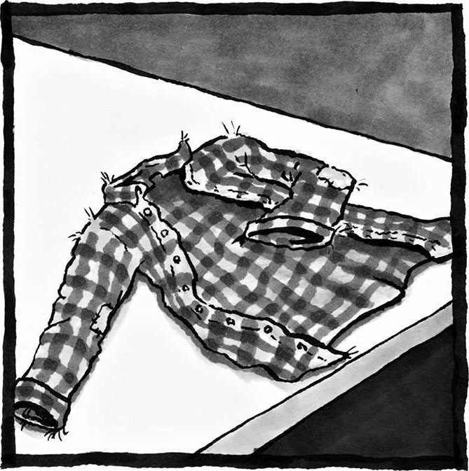
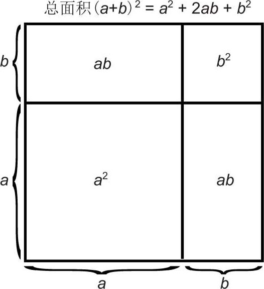
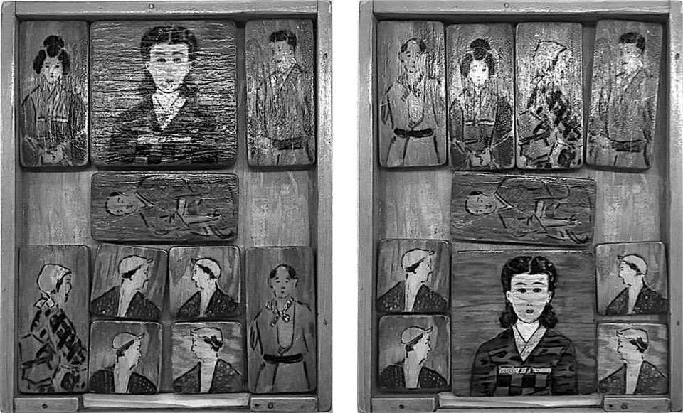

6 永恒
每经历一次纯粹的思考，都会有一些永恒的、实质的东西嵌入我们的灵魂。
——伯恩哈德·黎曼
（Bernhard Riemann）1
我感觉自己好像被准许进入了某个之前完全看不到的隐形世界。无论是当时还是现在，我都一直深深着迷于数学的魔力，都一直想弄清数学怎么能够如此精妙地和我们身旁的世界交织在一起。
——泰-达娜·布拉德利
（Tai-Danae Bradley）2
我的衣柜里有一件法兰绒衬衫。它那树叶般翠绿的颜色，总能让我想起我最喜欢的几次森林漫步。它是一件用途十分广泛的衬衫，我可以随时把它抓来穿到身上，以应对各种各样的场合——无论是山中徒步，朋友聚会，还是和室友彻夜长谈，大谈人生的意义，它都可以胜任——就像安全毯一样，它那暖融融的羊毛纤维可以让我感到一种慰藉。虽然它现在有些磨损，上面布满了岁月的痕迹，但同时它也承载了我太多的回忆，我实在无法忍痛将其抛弃。上面的每一条磨痕、每一块凸起都在跟我细细低语，向我讲述着昔日的故事。我们都希望生活中能有一些固定不变、可以依赖的东西，这件衬衫陪伴我走过了各种风风雨雨，我决不会丢弃它。

这件值得信赖的法兰绒衬衫代表着某种永恒。
永恒是人类心中普遍存在的一种渴求。我们希望美和爱是永恒的。我们还会寻求生命的永恒，或者至少尽可能地延缓死亡。此外，我们不是一直都在颂扬“耐久”这种美德吗？我们不是一直都在承诺爱情恒久吗？除此之外，我们还会留下一辈传一辈的遗产，还会希望自己做出一番成就，然后凭借这些成就（不包括我们自己身体方面的成就）永垂不朽。另外，对生育的渴求从某种意义上来说也算是对永恒的渴求。
数学中也存在对永恒的渴求。数学探索者们十分关心那些永不改变的事物。
我们都喜欢常数。常数这个词通常用于描述某些意义重大且固定不变的数字，比如黄金分割率、自然常数e、圆周率π。π之所以会令大家着迷，部分原因在于，除了和圆相关的几何学，它还会出现在其他多种场合，有些场合甚至远远超出了人们的预料。比如对平方数的倒数求和：
1/12+1/22+1/32+…=π2/6
此外，在正态分布的面积公式中，在海森堡不确定性原理中，我们都可以看到π的身影。由此可见，π的应用范围好像广袤无边——神秘又代表了某种永恒。毫无疑问，无论在时间长河的哪个节点，无论在浩瀚宇宙的哪个角落，π都是一个相当重要的常数。怪不得有这么多人想要背下它的各位数字，或是在其中寻找规律，试图彻底掌握它高深莫测的本质。
我们还会寻求各种不变量，即运算或操作过程中保持不变的量。例如，无论我用 5 乘以哪个数字，都不会改变这个数字的奇偶性。无论我怎样旋转一个三维几何体，都不会改变它的体积。不变量可以帮助我们理解运算或操作本身的某些特性。例如，通过分析那些旋转过程中保持不变的东西，我可以掌握旋转过程的某些性质：旋转所围绕的轴固定不变，这是旋转的重要特性之一。此外，还原魔方的关键在于，每次旋转魔方时都要留意有哪些色块不随着你的旋转而改变。在物理系统的数学模型中，我们常会见到“守恒定律”的概念，它指的是不随系统演化而改变的物理量，例如两辆汽车相撞时的总动量。每次开始认知新事物时，不变量都是一个值得信赖的“得力助手”。
不变量可以帮我们判断哪些事情是可能的，哪些事情是不可能的。例如上一章结尾，我给大家留了一个谜题：去掉对角线末端的两个格子之后，剩余的棋盘还能被骨牌平铺吗？想要让这道经典题目变得更加容易，我们可以寻找某些不变量：每次放置骨牌时，留意那些固定不变的东西。（剧透警告：如果你不想看到答案，请直接跳到下一段。）请注意，骨牌每次都会同时覆盖一个黑格子和一个白格子，因此无论你放置多少张骨牌，被覆盖的黑格子的数量总会等于被覆盖的白格子的数量。这种数量上的恒等关系就是一个不变量，它给了我们以下启发：如果你从对角位置上移走了两个颜色相同的格子，那么棋盘上黑格子和白格子的数量便不再相等，所以答案就是你无法用骨牌平铺剩余的棋盘。
很多数学概念的名称也可以从侧面反映数学家们对“永恒”的兴趣，比如稳定集、收敛性、平衡态、极限、不动点。
数学思想自身也蕴含着令人着迷、精美绝伦的永恒性。在自然科学当中，我们研究的是各种自然定律，通常会以观察到的客观经验为基础，总结出在各种情况下都成立的事实和规律。1不过随着新知识的出现，某些规律和事实可能会被推翻。而在数学当中，我们研究的是定理，建立在证明过程之上的数学定理永远都不会被推翻。无论何时，无论何地，数学定理的正确性永不改变。
这种永恒性是数学所独有的。1921 年，美国数学协会会长戴维·尤金·史密斯（David Eugene Smith）于致词中对数学定律的永恒性做出了如下描述：
尽管波斯人和米底人认为自己定下的法律永恒不朽，但如今这些条文早已消失殆尽；几千年来一直约束着古埃及人日常行为的道德准则，如今也变成了保存于博物馆中的古典文献中的只言片语；曾在法律界占据统治地位的古罗马法律体系，如今也早已被现代法规所取代；哪怕是那些我们在当今社会搭建好的法律框架，未来肯定也会发生改变。但是，在这万般变化的过程当中，有一件事永远不会出错，它在当今正确，在未来也必然正确，无论地球变成什么模样，无论是在当前的现实时空，还是在虚构的平面国，它都是放之四海而皆准的代数真理，它就是（a+b）2= a2+ 2ab + b2。……
很多化学知识在我小时候刚学的时候感觉非常正确，结果放在今天来看有很多都是错的。当初学到的分子物理知识现在看起来就像儿童故事，虽然有趣但略显幼稚。我们学到的历史虽然在很大程度上真实可信，但细节上必然漏洞百出。因此，在我们掌握的所有知识当中，只有数学能够完美诠释“定理”永恒不朽的特性，只有数学才能真正做到“昨日，今日，直至永远”，除此之外别无他物。2

（a + b）2 = a2 + 2ab + b2的“无字证明”过程。
虽然史密斯演讲时没有提到这个证明方法，但我还是情不自禁地想和大家分享一下
我们为何要追寻永恒呢？
我们之所以追寻永恒，是因为永恒能够给人类带来安全感，这种稳定性可以为心灵搭建一个港湾。我留着那件法兰绒衬衫，是因为我可以随时从中找到熟悉的感觉，它能带给我家一般的温暖。我会做出各种承诺，比如在婚姻中许下誓言，不是因为恪守承诺很简单，而是因为它很困难。我给出了誓言，我的妻子就有了安全感，有了可以依赖的允诺，反之亦然。无论人生如何起伏跌宕，永恒总能让人倍感舒适。
数学中的永恒也可以给人类带来类似的感觉。我们可以在万古长新的谜题中获得快乐，这种快乐会使我们全神贯注，忘却烦恼。在创造性的解题过程中锻炼思维，会使我们精神振奋，让思绪焕然一新。热爱数学科普工作的莫里斯·克莱因（Morris Kline）曾于《写给非数学家的数学》（Mathematics for the Nonmathematician）一书中，对数学给人们带来的舒适和安逸做出了如下描述：
数学问题的探索过程妙趣无穷，引人入胜。这种过程可以让人们精神专注，在无尽的挑战中获取片刻宁静，在繁忙的日常生活中偷得片刻空闲，把人们带进一个没有硝烟的战场，在五彩缤纷的奇异世界中不断穿行，感受连绵不绝的永恒之峰给人带来的强烈震撼。3
1941 年珍珠港事件后，美国约有 12 万名日裔美国人被剥夺了家园和财产，并重新安置到拘留营中。营中生活条件十分艰苦，连基本的家具都没有，他们不得不用废弃的木材和金属亲手制作一些替代品。后来，这种以篆刻、雕塑、绘画、艺术创作、手工艺品为核心主题的生活方式被人们称为“我慢”——这是一个日语单词，发音为gaman，意为“凭借尊严和耐性，去忍受常人所不能忍受之事”。
“我慢艺术展”展示了由营中这些普通男女制作的非凡工艺品。4在众多工艺品中，你会发现一个由松本龟太郎为孩子们创作的手绘木制滑块游戏，该几何游戏（见下图）的具体玩法是：不断移动其中的木块，帮助年轻女子（最大的方形滑块）逃离父母以及父母雇用的工人（长条状滑块）的追逐，同时还要躲避四个爱慕者（小方形滑块）的围追堵截，最终从缺口（位于底部最中间）离开框架。这个游戏似乎是某个流行于 20 世纪 30 年代的游戏的变体，在日本又被称为箱入娘（Hakoiri musume），在法国被称为L’âne rouge（意为红色的驴子），在中国被称为华容道。每个版本中的角色都有所变化。目前大家已经求出游戏最少步数为 81。5

松本龟太郎制作的滑块游戏，左侧为游戏初始状态，右侧为游戏结束状态。
图片由市川真也提供，滑块游戏由让·松本、爱丽丝·安藤提供
无论是滑块游戏的创作过程还是解谜过程，其中涉及的数学思考对人们来说都是一座心灵的庇护所，都是“我慢”生活态度的一种承载形式。这无疑是“于绝境中绽放”的真实写照。
我们追寻永恒还有一个原因，那就是永恒可以看成记录生命重要节点的一把标尺。我那件法兰绒衬衫现在已经有了不少伤痕和小污点，它们记录着我生命中的许多事件和回忆。它再也不是以前那件衬衫，我也不再是以前那个我。我 20 岁时，它宽松舒适；现在穿上以后，它在某些地方显得紧绷了很多。所以我每次穿上它时，它在我眼里都会有所不同，松紧程度也会有所变化。每次的不同和变化对我来说都有很大的意义，因为我可以借由它们记录自己的人生。
同样，虽然定理的正确性永恒不变，但我每次遇到它都会有新的收获。第一次遇到它时，我绞尽脑汁想要抓住它的本质，此时它就像一头愤怒的熊。下一次再遇到它，我可能已经有所领悟，此时它就像一只被驯服的狮子。几年之后我再遇到它，我会觉得它是一只友善的小狗，它和附近的小狗（我所掌握的其他真理）相处都很融洽。定理是一把永不磨灭的标尺，我可以用它衡量自己的进步，记录自己的奋斗和成功。过去你觉得很难理解的那些数学概念，如今可能变成了熟稔于心的得力工具。对数学探索者来说，每个定理都是一次次探险过程的宝贵回忆，正是这些值得怀念的回忆一步一步拓展了一个人的各项能力。
我们追寻永恒的第三个原因，就是它可以成为值得信赖的立足点。攀登嶙峋的峭壁时，我必须知道哪里可以落脚。我当然不会把脚踩在松软的沙质棱角上，我需要的是牢固的岩石。同样，到一个陌生的地方时，我会寻找地标建筑，或是其他不会变化的、可以用来导航的东西，就像几个世纪以来人们一直依靠天上固定不变的恒星寻找方向一样。每次伸手去拿那件法兰绒衬衫时，我都把它当作一件值得信赖、固定不变的百搭衣物，然后围绕它来挑选其余穿戴。
在数学中，当我们想要证明某个命题时，公理、定义、定理通常就是我们的“立足点”。古希腊数学家欧几里得因专著《几何原本》（完成于公元前 300 年左右）而闻名天下，这套书从某些不证自明的公理和公设出发，通过缜密的逻辑推理，系统地把各种几何结论整理到了一起。不过，欧几里得那些公理并不是组织几何语言的唯一凭据，数学家大卫·希尔伯特（David Hilbert）就曾于 1899 年选择了另一套几何公理。攀登悬崖峭壁的方式有很多种，欧几里得和希尔伯特只不过是在出发时选择了不同的立足点。后来公理系统也逐渐被应用到了其他数学领域。普通的数学探索者很少会遇到需要使用公理的情况，因为绝大多数人已经处在峭壁之上，正在一步一步地向上爬。不过，知道脚下的路是从哪里来的，总归是一件令人安心的事。
此外，一个全新数学理论的建立，通常必须以某些初始公设或已有定义为前提。例如爱因斯坦于 1905 年首次提出的狭义相对论，就是以两个基本假设作为出发点：对所有处于非加速状态的观察者来说，物理定律和光速皆恒定不变。这种不变性假设帮助爱因斯坦得出了相当重要的结论，那就是长度、质量、时间这些物理量全部取决于观察者处于怎样一个参考系。尽管这是一个无比怪诞的数学结论，但如今它已被实验证实。
如果说公理是靠近地面的立足点，那定理就是分布在峭壁上面的立足点，而那些用途最为广泛的定理简直就像大型观景台，站在上面你可以小憩片刻，欣赏美景，也可以俯视四方，进退自如。定理为我们总结了关键结论，为各种应用奠定了基础。中心极限定理就是一个很好的例子，作为一个概率学结论，它描述了一个惊人的现象：当你从某个整体中抽取一个足够大的随机样本，试图测量该整体中某项数据的分布情况时（比如以百分比衡量的药效），你会发现，无论该未知整体中这项数据分布情况如何，它的样本均值都会呈现正态分布。中心极限定理是很多统计应用的基础，比如计算总体平均值的置信区间，或者判断一个测试结果的可靠程度是否足以让我们得出最终结论（比如判断某种药物的效果是否强于安慰剂）。
由此可见，我们之所以追寻永恒，是因为它是心灵的港湾，是人生的标尺，是可以依靠的立足点。但这些还不足以说明为什么人对永恒的渴求如此根深蒂固。
人的每种渴求都涉及一个与之对应的、具有终极意义的问题。如果渴求爱与被爱，你就会沉迷于“我可爱吗？”这个问题；如果渴求美的东西，你就会不断问自己“什么东西可以称为‘好’？”；如果渴求游戏，你的内心就已经承认了这样一个富有哲理的观点：生活比工作更重要。对永恒这种渴求来说，它的核心问题就是人们的内心有一种未被满足的需求。
我可以信任什么人、什么事？
没错，人们之所以渴求永恒，本质上是因为人们需要信任。我寻求心灵港湾，是因为我需要一个值得信任的绝对安全的藏身之所。我需要标尺，是因为我坚信它绝不会发生变化。我敢踩在立足点上，是因为我坚信它可以安全地支撑我。
就在我写下这些文字的时候，美国已经成为一个深陷信任危机的国家。所有人都在思考：我可以信任一个世界观和我大相径庭的人吗？我可以信任我们的政治领导人吗？我可以信任媒体吗？我们的家人分不清新闻的真假，在重重疑云之中，很多人早已放弃了分辨。党派斗争导致了知识安全性的缺失，因为人们心里明白，自己所能获取的那些知识根本没有确凿的事实基础，所以干脆选择了放弃。乔治·奥威尔在他的反乌托邦小说《1984》中，如此描述了一个极权（“党”）统治下的、 利用各种政治宣传和欺骗手段来操纵群众的世界：
终有一天，党会宣布二加二等于五，你必须相信它就是事实。党迟早会这样宣布的，这完全无法避免。这种逻辑推理完全符合党的需求。他们的哲学的存在目的，不仅是为了否认经验的可靠性，更是为了否认客观真理的存在。异端邪说，反倒成了常识。你若不那样认为，他们便会杀死你。这固然可怕，但更可怕的是，他们的话可能是对的。6
蕴含在数学当中的永恒性，可以让我们对各种数学推理过程保持坚信不疑的态度。信任理性，乃是一种由承认数学的永恒性所培养的品格。昨天行之有效的观点，放到今天同样颠扑不破。通过深度分析、缜密推理，我们确立了不可动摇的真理。因此，奥威尔会选择一个数学谬论作为“党”强迫群众相信的内容，也就不足为奇了。生活中我们遇到的大部分知识都会涉及视角、不确定性、错误、信息不全等问题，所以这些知识会经历各种修订和完善。但数学真理不一样，它绝不可能会被推翻。虽然它们的诠释方式可能会有所改变，重要程度可能会有所褪色，但它们一直都会是绝对正确的真理：从昨日，到今日，直至永远。
对奥威尔来说，一个人所能面临的最恐怖、最荒诞的事情，就是当数学真理——客观事实的存在——不再永恒时，我们会彻底失去值得信赖的立足点、衡量人生的标尺，以及心灵的港湾。
------鞋带计时谜题------
现在你的面前有一根鞋带、一些火柴、一把剪子。无论从哪一端点燃，鞋带都会像引信一样燃烧起来，燃烧时间刚好为 60 分钟整。整根鞋带具有严格的对称性：距最左端x距离的某点，和距最右端x距离的某点必然具有相同的燃烧速率。在这些对称点之外，鞋带上任意两点的燃烧速率都不一定相同。
1.求出你能精准计量的最短时间。（例如，你可以精准计量 30 分钟，只需同时点燃鞋带两端，等待火苗相遇即可。）
2.如果你有两根完全相同的、符合上述条件的鞋带，此时可以精准计量的最短时间是多少？[1]
弗朗西斯先生，您好：
我是不是已经把数学当成了心灵的港湾？其实我在研习数学时，数学也在磨炼着我。我从数学当中学会了坚韧、耐心、谦逊。在寻找答案的过程中，我的推理越来越自信，我也越来越明白推理过程的重要性。虽然我在认真研习数学之前就已经拥有了这些品格，并对它们坚信不疑，但我发现，随着数学学习的不断深入，这些品格正在不断得到强化、巩固。所以没错，数学就是我心灵的港湾，我在监狱里一直都把它当作某种最重要的陪伴。
当我打开《上帝创造整数》（God Created the Integers）[2]这本书，读到欧拉的四平方和定理，知道了每个正整数均可表示为 4 个整数的平方的和时；当我打开傅里叶《热的解析理论》开始苦思冥想，最终恍然大悟时；我都会产生这样一种感觉：我正在攀登古往今来人类理解力的顶峰，正在理解某种永恒的思想。只要宇宙不毁灭，2+2就永远等于 4， 三角形的内角和就永远都是……不管是多少吧，只要我们弄清了，它就永远不会改变。这种永恒性让我感觉自己和某个更广泛的、更强大的、更深刻的东西越来越近。那东西……或许就是真理。
克里斯
2018 年 9 月 9 日
[1]这个问题是由理查德·赫斯提出的，见于 “Problem Department,” ed. Clayton W. Dodge, Pi Mu Epsilon Journal 10, no. 10 (Spring 1999): 836。赫斯将这一创意归功于卡尔·莫里斯。
[2] 《上帝创造整数》一书由史蒂芬·霍金编评，该书选取了数学史上数十篇里程碑式的论文，是克里斯最喜欢的数学著作之一。